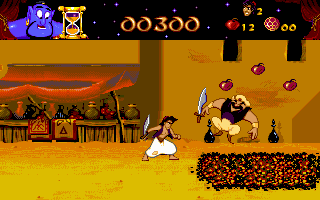
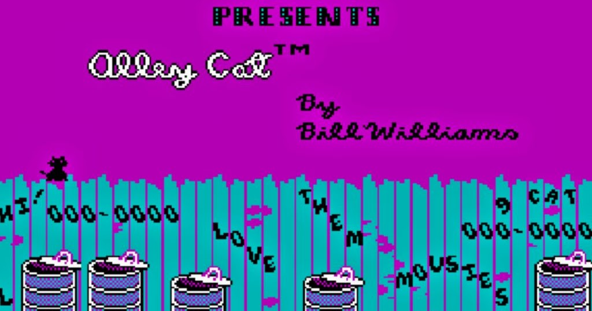
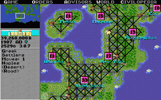
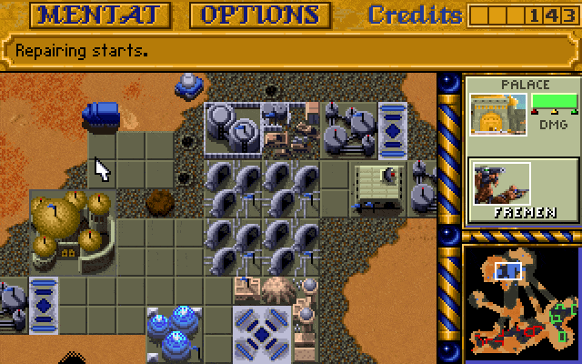
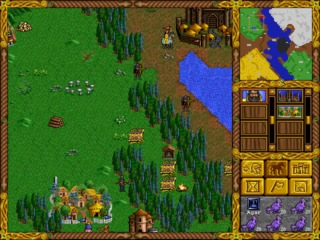
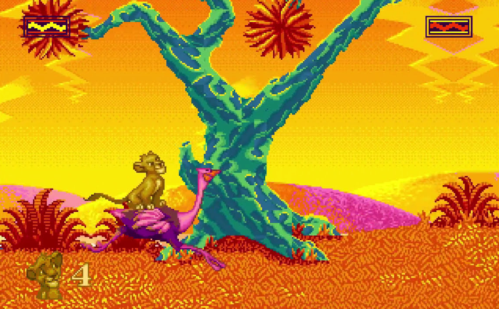
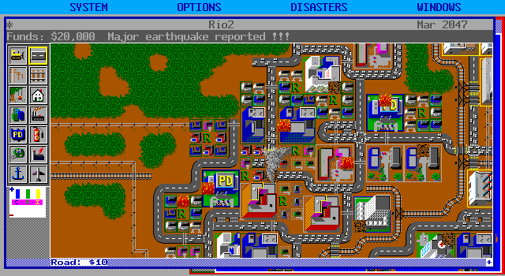
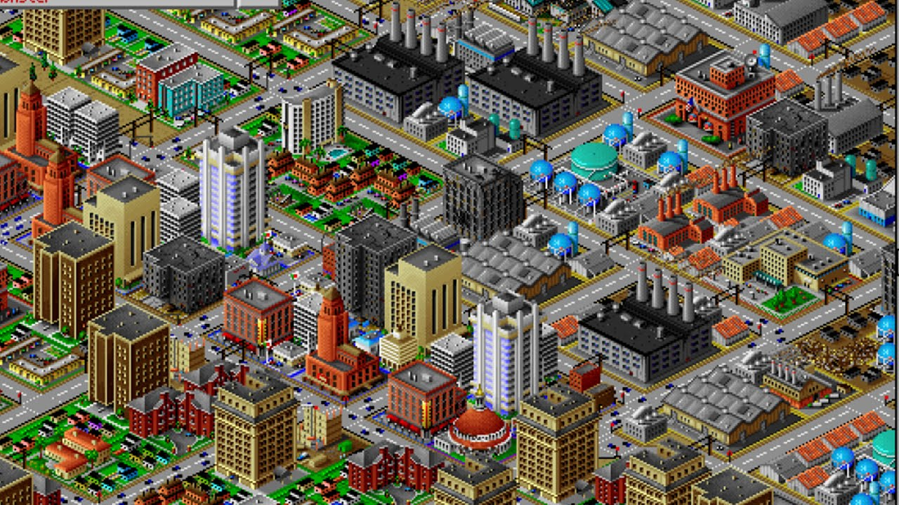
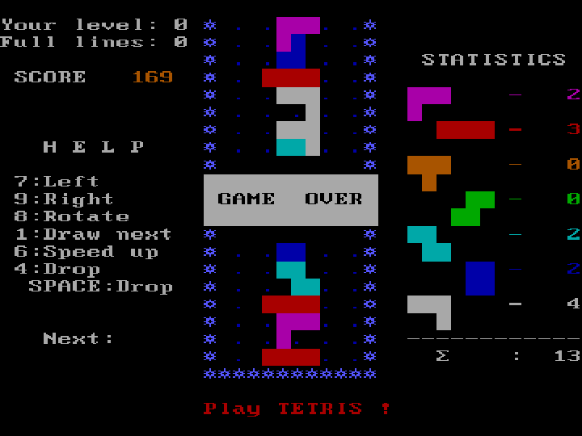

Games
I take an interest in game emulators and open-source games that work on Linux. Here is a list of the best emulators, roms, and open-source games I have found to date. I've attached a personal rating for each game, but that's just my opinion.
DOSBox - Microsoft DOS Emulator
Best games for DOSBox

Aladdin 4.0/5.0
Basic mario style game where you guide Aladdin through different maps which correspond to the original Disney Movie. Never finished this game, only gotten to about level 5 or 6.

Alley Cat 3.5/5.0
I still have no idea what the point of this game is or how to win. You control a cat that jumps through windows and does weird stuff. Like catching mice from a cheese block. This game is probably more nostalgic than actually good.

Civilization 4.0/5.0
Actually a pretty fun game - never finished though. You build a civilization, grow it, fight, etc. Found it dificult to figure out exactly what to do which is probably why I didn't get too far into the game

Dune 2 - 5.0/5.0
Best DOS game in my opinion. A great strategy game that I think is loosely based off of the book Dune. Never completed it, I keep losing around level 5 or 6. Highly recommend.

Heroes Of Might and Magic - 3.0/5.0
Another game I haven't had a ton of experience with. You fight monster and explore a kingdom. Graphics look really nice.

Lion King - 4.0/5.0
Sad to say I haven't finished this game, even on easy mode. Actually come to think of it I don't think I've finished any of these games. Anyway another mario style game that revolves around following Simba. Yes, based on the lion king. First levels are the best, I think I've again gotten to level 6.

SimCity - 5.0/5.0
This might be the only game I've really "completed". As in my city got so big that the game just got too slow to really play. Fun game, takes some strategy, the whole point is to build your city without going bankrupt.

SimCity 2000 - 4.5/5.0
SimCity but 3D and new features. Fun game, haven't completed or built a really big city with this one.
